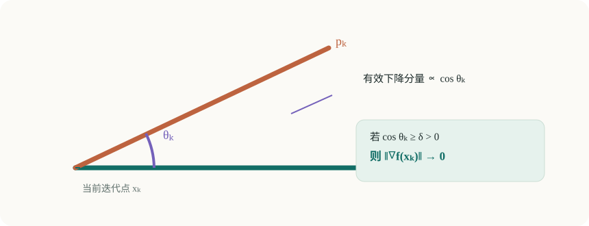

3.2 线搜索方法的全局收敛：Zoutendijk 条件
合适的步长还不够，搜索方向也不能长期接近梯度的正交方向。Zoutendijk 条件把每一步的有效下降累积起来，揭示全局收敛真正依赖什么。
步长合适，方向也必须合适
线搜索迭代写成 xk+1=xk+αkpk。Wolfe 条件控制 αk，但即使步长选择合理，如果 pk 越来越接近等高线切向方向，梯度也可能不再显著下降。全局收敛分析因此必须同时考察步长与方向。

方向与最速下降方向的夹角
令 gk=∇f(xk)，pk 为下降方向。定义 θk 为 pk 与 −gk 的夹角，则 cos θk 为正：
最速下降方向 pk=−gk 时，cos θk=1。若搜索方向几乎与梯度正交，cos θk 接近 0，线搜索即使找到满足 Wolfe 的 α，也无法弥补方向本身缺少有效下降分量的问题。
Zoutendijk 定理与证明主线
假设：f 在包含初始水平集 {x:f(x)≤f(x₀)} 的开邻域内连续可微；f 在整个空间有下界；∇f 在该邻域内 Lipschitz 连续；每个 pk 都是下降方向；αk 满足 Wolfe 条件。则有
证明的关键是两条不等式。Wolfe 曲率条件给出新旧梯度差在 pk 上的投影下界；Lipschitz 梯度给出同一投影的上界。合并后可得一个步长下界，再代入 Armijo 充分下降条件，得到
把每轮下降量相加，函数值始终不低于其下界，所以这些非负下降项的总和必须有限。这就是 Zoutendijk 条件。
从级数有限到梯度趋零
若还能保证存在 δ>0，使所有迭代都有 cos θk≥δ（搜索方向不会长期接近与梯度正交），那么 Zoutendijk 级数有限立即推出 ‖∇f(xk)‖→0。最速下降法满足 cos θk=1，因此在这些假设和 Wolfe 线搜索下，梯度范数趋于零。
对 Newton-like 方向 pk=−Bk−1gk，若 Bk 正定，且存在 M 使 ‖Bk‖‖Bk−1‖≤M，则 cos θk≥1/M；因此也能得到梯度趋零。
全局收敛不等于收敛到极小点
这里的“全局收敛”指从所考虑的初始点出发，梯度范数趋于零，而不是保证极限点一定是局部极小点。驻点可能是鞍点或局部极大点。要得到更强结论，还需要方向策略利用负曲率信息等额外机制。
不要过度解读：Zoutendijk 条件本身只保证加权梯度平方可求和。若 cos θk→0，梯度未必趋零；必须再加入夹角有正下界的方向条件。
交互：角度下界为什么重要
比较两组构造序列。A 组的夹角余弦固定为 δ，梯度按 1/(k+1) 衰减；B 组梯度恒为 1，但 cosθ=1/(k+1)。两组加权平方和都收敛，只有 A 组能从角度下界推出梯度趋零。
实时计算
Python：可复现的数值检查
程序没有模拟某个具体优化器，而是构造两组满足加权级数收敛的数列，检验逻辑上为什么夹角正下界是推出梯度趋零的关键。
"""Illustrate why the angle lower bound matters in Zoutendijk's condition."""
def partial_sum_angle_bounded(n: int, delta: float) -> float:
# cos(theta_k)=delta and ||g_k||=1/(k+1).
return sum((delta ** 2) / ((k + 1) ** 2) for k in range(n))
def partial_sum_vanishing_angle(n: int) -> float:
# ||g_k||=1 while cos(theta_k)=1/(k+1).
return sum(1.0 / ((k + 1) ** 2) for k in range(n))
if __name__ == "__main__":
n, delta = 100, 0.5
bounded = partial_sum_angle_bounded(n, delta)
vanishing = partial_sum_vanishing_angle(n)
print("angle bounded: weighted sum =", bounded, "; gradient -> 0")
print("angle vanishes: weighted sum =", vanishing, "; gradient stays 1")
assert bounded < 1.0
assert vanishing < 2.0
assert abs(partial_sum_angle_bounded(n, delta) -
delta ** 2 * partial_sum_vanishing_angle(n)) < 1e-12思考：如果 ‖∇f(x_k)‖→0，是否能直接推出 x_k 收敛？如果函数有多个驻点，迭代点可能出现什么行为？